프롬프트 한 번으로 게임에 바로 넣을 수 있는 스프라이트 시트를 자동 생성합니다. 기존 생성형 AI가 "픽셀 느낌의 이미지"까지만 만들고 멈추는 지점에서, 배경 제거와 균일 배치까지 자동화해 에셋으로 완성한 것이 차별점입니다.
스프라이트 시트는 캐릭터의 여러 동작 프레임을 격자로 모아둔 비트맵입니다. 슈퍼마리오·소닉부터 메타버스 플랫폼 ZEP의 아바타까지 2D 캐릭터가 움직이는 모든 곳에 쓰입니다.
게임 엔진이 일정 간격으로 잘라서 순서대로 보여주기 때문에, 한 칸이라도 크기나 위치가 어긋나면 동작이 튑니다. 그래서 "무엇이 충족돼야 실제로 쓸 수 있는가"를 요구조건 4개로 먼저 못박았습니다.
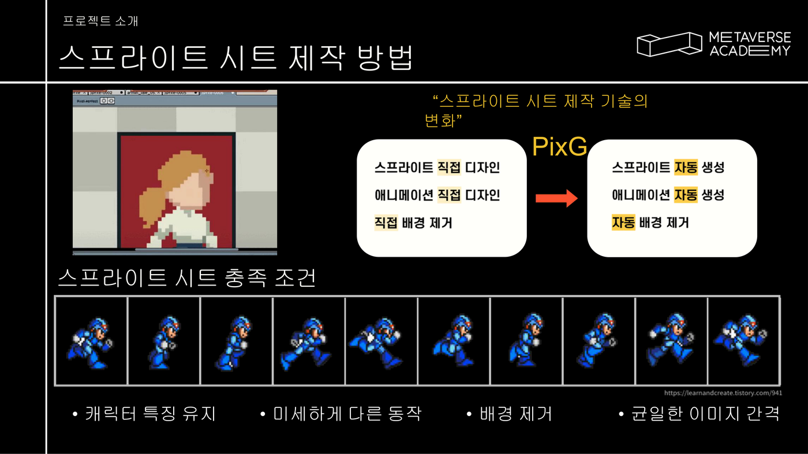
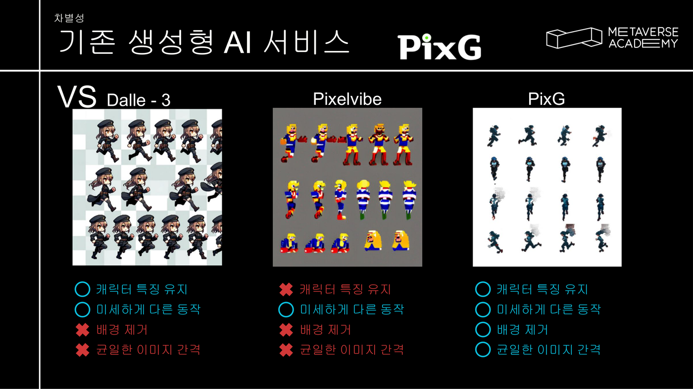
5명(AI 개발자 2 · 데이터 사이언티스트 2 · 프론트엔드 1) 팀에서 Stable Diffusion 이미지 생성 파이프라인 · 배경 제거/화질 복원 후처리 · 후처리 자동화 스크립트를 담당했습니다. 발주처는 한국전파진흥협회입니다.
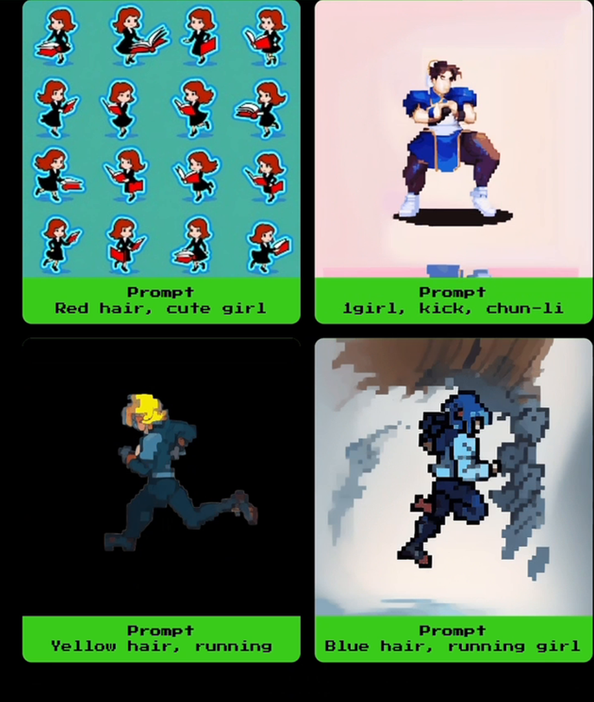
Red hair, cute girl · Knight holding sword · Yellow hair, running| 구간 | 설정 |
|---|---|
| 베이스 | Stable Diffusion 1.5 + 픽셀아트 LoRA · CLIP skip -2 |
| 동작 생성 | AnimateDiff animatediffMotion_v15V2 ·
context_length 16 · steps 20 / cfg 8 · dpmpp_2m_sde_gpu + karras |
| 자세 제어 | ControlNet 2종 — OpenPose 1.0 + Depth 0.2 |
| 환경 | 개인 RTX 3060 6GB / 아카데미 RTX 4090 24GB |
OpenPose를 1.0으로 강하게 걸어 동작을 확정하고, Depth는 0.2로 약하게만 얹어 입체감만 보조하도록 역할을 나눴습니다. Depth를 올리면 픽셀아트 특유의 납작한 화풍이 무너집니다.
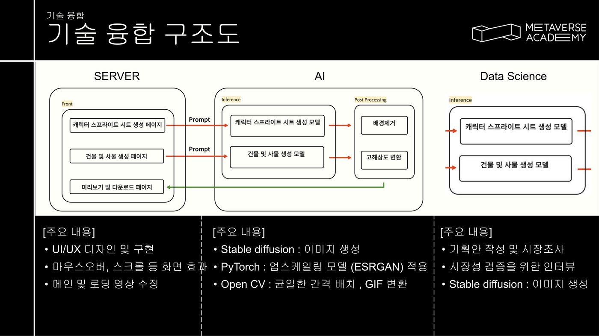
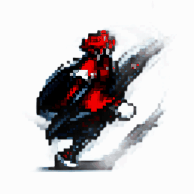
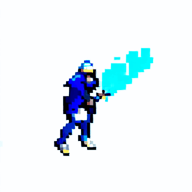
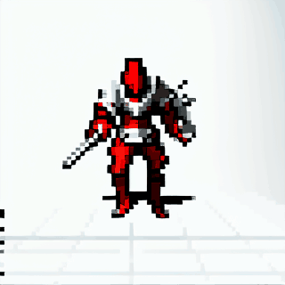
생성된 프레임을 게임 엔진이 바로 읽을 수 있는 에셋으로 바꾸는 구간입니다.
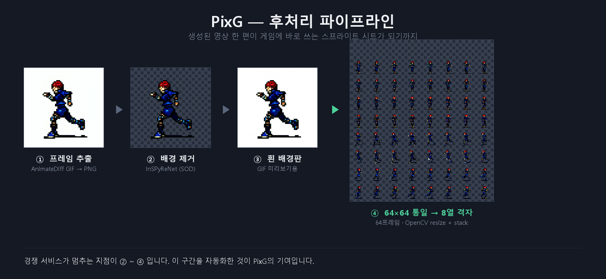
| 단계 | 내용 |
|---|---|
| 배경 제거 | InSPyReNet (transparent_background) — Salient Object Detection 기반.
RGBA 출력과 흰 배경 출력을 모두 뽑아 비교했습니다 |
| 화질 복원 | ESRGAN 계열 1x 복원 — 1x-DeJpeg · 1x_PixelSharpen해상도를 올리는 업스케일이 아니라, 같은 크기에서 압축 아티팩트만 제거하는 용도입니다 |
| 규격 통일 | 전 프레임 64×64 리사이즈 · 투명 패딩 |
| 격자 배치 | 8열 단위로 hstack 후 vstack —
게임 엔진이 일정 간격으로 자를 수 있는 형태 |
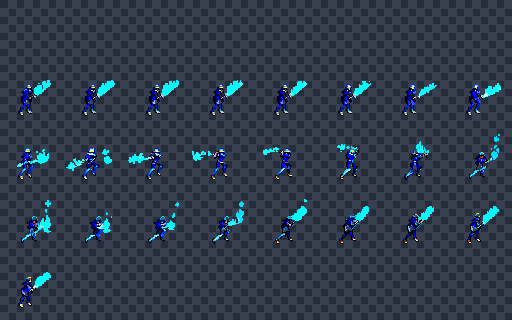
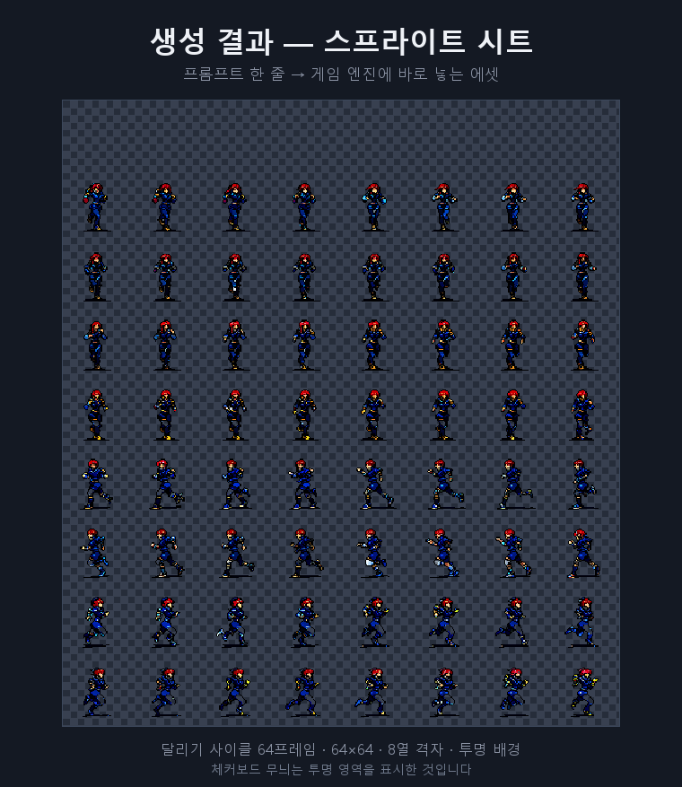
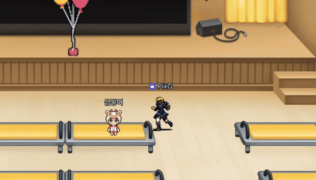
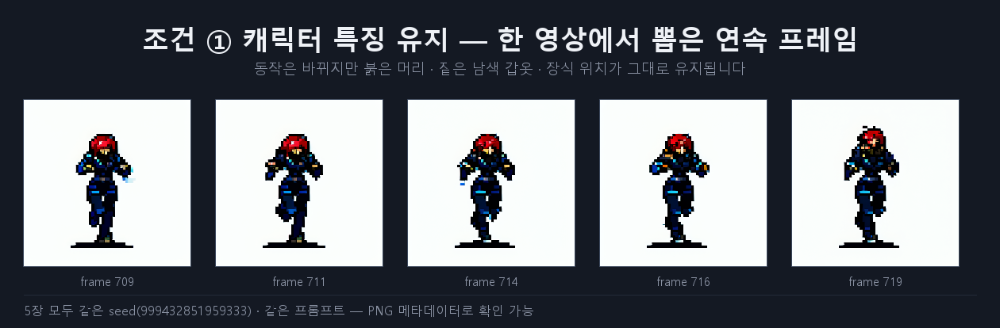
"이미지가 잘 나왔다"는 자체 평가로 끝내지 않고 실제 사용처에 넣어봤다는 점이 이 프로젝트에서 가장 중요한 검증이었습니다.
요구조건 4개를 정의한 이유도 결국 여기에 있었습니다 — 하나라도 빠지면 ZEP에 올라가지 않습니다. 배경이 남으면 아바타 뒤에 사각형이 보이고, 격자 간격이 흔들리면 걷는 동작이 튑니다.
데이터 사이언스 파트에서는 별도로 현직자 인터뷰를 통해 시장성을 검증했습니다.
| 한계 | 내용 |
|---|---|
| 일관성 정량 근거 부재 | 육안 비교로만 판단했습니다. 이 아쉬움이 Emour에서 평가 체계를 먼저 설계하는 방식으로 이어졌습니다 |
| GPU 메모리 수치 미기록 | RTX 3060 6GB에서 작업한 것은 확실하지만, OOM 임계값이나 최적화 전후 수치는 로그에 없습니다 |
| Flask 연동 코드 소실 | 서버를 붙인 경험은 있으나 코드가 남아 있지 않아, 엔드포인트·설계 세부는 주장하지 않습니다 |
| 스프라이트 시트 첫 행 | 격자 합성 스크립트가 열 방향만 잘라내고 시드 행을 남겨, 결과물 맨 윗줄이 비어 보입니다 |
요구조건 4개를 못박은 뒤에야 어떤 기술이 필요한지, 무엇이 부족한지, 경쟁 서비스와 무엇이 다른지가 모두 보였습니다. 이 방식은 이후 Blind Dating에서 push/pull 비교표를 만들어 판단하는 방식으로 이어졌습니다.
이미지 생성 자체는 공개 모델 조합으로 가능했습니다. 실제로 시간을 쓴 곳은 배경 제거·규격 통일·격자 배치였고, 그게 없으면 에셋이 되지 않습니다.
이 프로젝트를 다시 정리하면서 당시 문서의 기술명 3건이 실제 코드와 달랐다는 것을 발견했습니다 (U2-Net → 실제 InSPyReNet, ESRGAN 업스케일링 → 실제 1x 복원, crop 70% → 실제 64×64 격자). 코드를 다시 읽어 전부 정정했습니다.